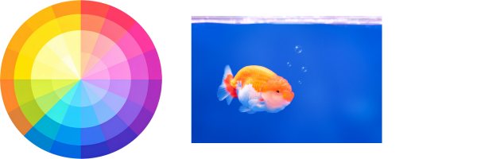
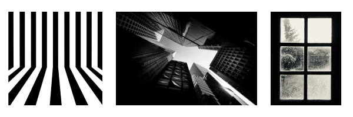

You are expected to experiment, reflect, and make decisions — not aim for “nice-looking” colour.
In this lesson, you will:
This lesson shifts colour from a finishing step to a conceptual tool.
https://youtu.be/3buTLx3WObo
A limited palette means working with very few colours on purpose.
Limiting colour:
You will discover that less colour often creates more meaning.
You might see:
The result often feels unified, intentional and has a strong in mood
MonochromaticOne colour + its tints (lighter) and shades (darker). Goal: Create unity and explore value. |
Analogous2–3 colours next to each other on the colour wheel. Goal: Create harmony and smooth transitions. |
Complementary (Limited)Two opposite colours. Goal: Create strong contrast while staying controlled. |
Neutral + AccentMostly neutral tones (black, white, grey, brown) with one bright colour. Goal: Create emphasis and focus. |
It strengthens composition When colour isn’t overwhelming, the viewer notices: shape, value, contrast, and focal point. It improves colour control. It creates unity. Limited palettes naturally make work feel cohesive and professional. Limited paletts builds mood: Few colours = stronger emotional tone.
They train you to:
Professional artists often limit their palette because it gives them control.
https://youtu.be/Q36D6M9V8YE
Colour contrast is when you place colours next to each other that are very different.
Emphasis is when you make one part of your artwork stand out more than the rest.
When you use colour contrast intentionally, you create emphasis — you guide the viewer’s eye to what matters most.
Colour contrast happens when colours differ in:
The greater the difference, the stronger the contrast.
Complementary colours sit opposite each other on the colour wheel:
When placed side by side, they create strong visual tension and energy.

This is contrast between:
High value contrast creates strong focus and drama.

Warm colours (reds, oranges, yellows) feel closer. Cool colours (blues, greens, purples) feel farther away.
Artists use this to: create depth and pull attention forward
Emphasis is the focal point — the part of your artwork that grabs attention first.
You create emphasis using:
Colour is one of the strongest tools for emphasis.
Example:
If your whole painting is grey-blue and you add one bright red object, your eye will immediately go to the red.
https://youtu.be/u4jc3KzqaOM
Symbolic colour represents ideas or feelings rather than reality.
Examples:
Red → anger, passion, warning, power
Blue → calm, sadness, distance
Yellow → energy, anxiety, optimism
Symbols can be personal, cultural, or emotional.
For much of art history, colour was expected to match reality.
In the late 19th and 20th centuries, artists began using colour to:
Artists in Fauvism (1905–1910) believed that colour did not need to copy reality in order to be powerful. Before this movement, many artists used colour mainly to make paintings look realistic by carefully matching what they saw in the world. Colour was often used to describe light, shadow, and surface detail. The Fauvist artists challenged this idea. They believed colour could do more than describe—it could communicate.
For Fauvist painters such as Henri Matisse and André Derain, colour became a visual language. Just as words can express feelings, tone, and intensity, colour could express emotion and energy. A face did not have to be painted in natural skin tones. It could be green, purple, or bright orange if that colour better expressed the mood of the painting. The goal was not accuracy but emotional truth.
In works like Woman with a Hat, Matisse used bold, unexpected colours to create excitement and movement. The colours are not decorative additions; they are the main way the painting communicates. Derain, in his landscapes, used intense reds, blues, and yellows to build structure and space instead of relying on traditional shading. The strong contrasts create vibration and tension, giving the artwork life.
By treating colour as language, Fauvist artists showed that colour choices are not random or simply “pretty.” They are intentional decisions that shape how a viewer feels. A bright red might create energy or intensity. A deep blue might suggest calm or melancholy. When colour is used this way, it becomes a tool for meaning rather than surface decoration.
For art students, this idea is important because it shifts the focus from copying reality to expressing ideas. Instead of asking what colour something actually is, you begin to ask what colour it should be to communicate a feeling or message. Learning from Fauvism encourages risk-taking, creative confidence, and stronger decision-making. It helps you understand that colour can speak just as clearly as subject matter.
In this way, Fauvism proved that colour does not simply describe the world—it can interpret it.
Jean-Paul Riopelle was a Canadian abstract painter associated with Abstract Expressionism. His work is known for bold, energetic colour and thick application of paint.
Riopelle’s colour choices were not realistic — they were expressive. Colour and movement worked together to create emotion and intensity.
Key Characteristics of Riopelle’s Work:
How This Connects to Your Work: Riopelle shows that colour can communicate energy and emotion without representing real objects. Your colour choices can express how something feels, not just how it looks.
Kent Monkman is a contemporary Indigenous artist who uses dramatic colour, theatrical lighting, and historical references to challenge colonial narratives.
Monkman often exaggerates colour to:
Key Characteristics of Monkman’s Work:
How This Connects to Your Work: Monkman’s work demonstrates that colour can be political, symbolic, and intentional. Colour choices can reinforce meaning and point of view.
Mark Rothko was an international abstract painter known for large colour-field paintings. His work often consists of layered blocks of colour that appear simple but are emotionally complex.
Rothko believed that colour alone could communicate deep emotional states.
Key Characteristics of Rothko’s Work:
How This Connects to Your Work: Rothko shows that colour does not need imagery to create meaning. Emotional response can come from colour relationships alone.
Choose colour with purpose — it speaks before words do.